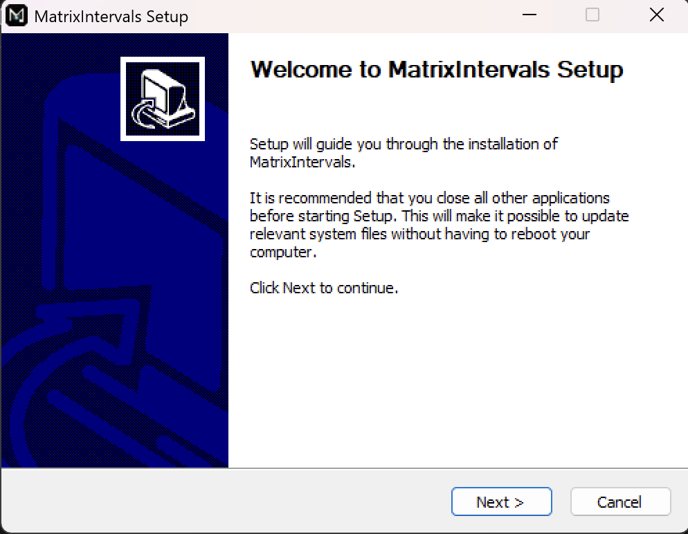
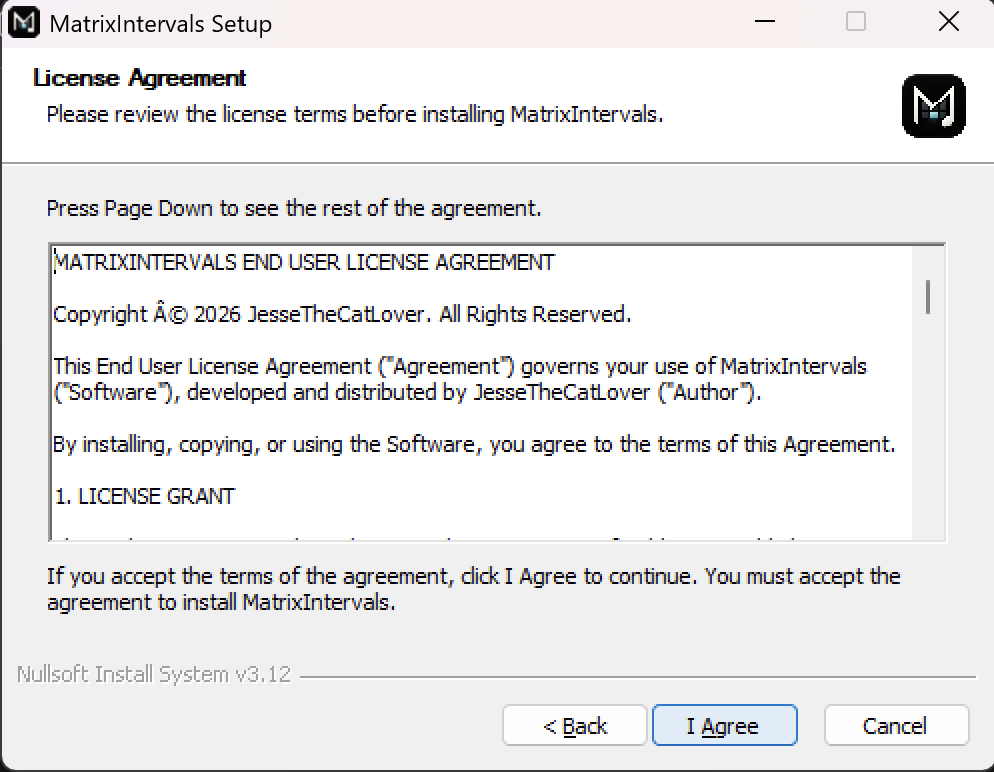
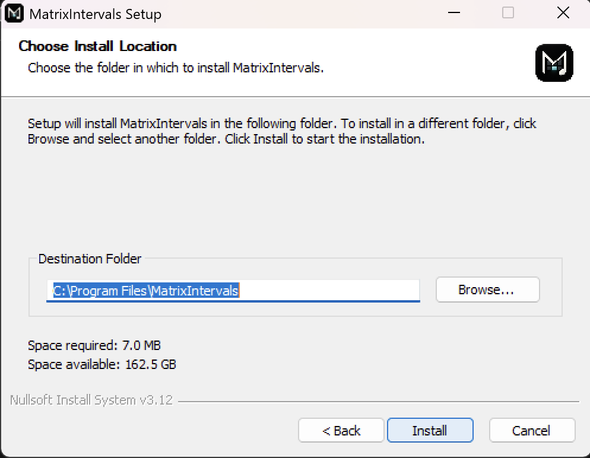
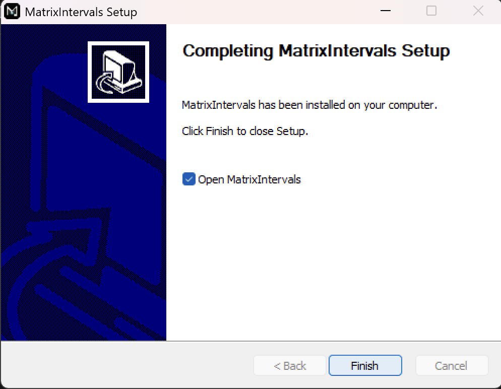

Windows
نصب MatrixIntervals روی Windows.
برای نصب و اجرای MatrixIntervals روی Windows، مراحل زیر رو دنبال کنید.
دانلود MatrixIntervals
آخرین نسخه MatrixIntervals مربوط به Windows رو از صفحه دانلود دریافت کنید.
دانلود۱. Installer رو اجرا کنید
فایل Installer با پسوند .exe رو باز کنید
و برای ادامه روی Next کلیک کنید.

متن توافقنامه رو بررسی کنید. اگه با شرایط موافقید، روی I Agree کلیک کنید تا ادامه بدید.

محل نصب برنامه رو انتخاب کنید، سپس روی Install کلیک کنید تا نصب شروع بشه.

بعد از کامل شدن نصب، روی Finish کلیک کنید تا Installer بسته بشه.
